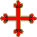
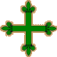
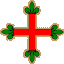

The Iberian Orders
SPAIN
 The Order of Calatrava
The Order of Calatrava (Órden de Calatrava), the oldest of the Iberian Orders, was founded in 1158 by Raimundo Serrat, the abbot of the Cistercian monastery of Fitero, Spain, to defend the fortress of Calatrava along the border against the Muslims, in southern Castile. This fortress (Qal'at Rabah) had been recaptured from the Moors in 1145 by the King of Castile Alfonso VII, who had previously given it to the Knights Templar. Feeling incapable of defending it against the offensive launched by the Almohads, the Knights Templar returned the fortress to the king some ten years later.
The Order of Calatrava was confirmed by Pope Alexander III on September 25, 1164.
In September 1187, the general chapter declared that the members of the Order of Calatrava were affiliated with the Order of Citeaux. The knights lived in the castles, while the chaplains (who were clerics) lived in the priories. However, all the members of the order were considered to be Cistercian monks and as such had to apply the rule. In the same way as the Knights Templar, the members of the order did not perform any hospital activities.
The Order of Calatrava was the most important Iberian order, to which several other orders were affiliated or attached: Alcántara, Aviz, joined later by the short-lived Order of Santa Maria, and by the Orders of Montesa and Christ, which arose from the remains of the Order of the Temple. All of these orders formed the large family of Cistercian military orders.
Calatrava was incorporated into the crown of Spain by the Catholic Kings in 1487, upon the death of the 30th Grand Master. Since the Spanish government had abolished the monasteries, the prior of Sacro Convento was expelled on July 25, 1835, while the knights blew up their own fortress. The situation of the orders was only settled on October 17, 1851, when they were all grouped in the same province (Ciudad-Real), which constituted an exempt diocese and received the title Privato de las Ordenes. It was headed up by a prior bishop, assisted by a canonical chapter whose members belonged to one of the four orders: Calatrava, Alcántara, St James of the Sword and Montesa.
Today, the Order of Calatrava has become purely ceremonial, but Comendadoras still live in two monasteries: in Madrid and Burgos.
 The Order of Alcántara
The Order of Alcántara (Órden de Alcántara) was allegedly founded in 1177, in imitation of the Knights Templar. But its origins can be traced back to 1156, when two brothers, Suarez and Gomez, were counseled by a hermit to build a fortress along Castile's borders in the diocese of Ciudad Rodrigo to stand fast against the Moors. They named it St Julian de Pereiro (San Julián del Pereiro). The establishment was confirmed as a religious and military order by Pope Alexander III in 1177 at Gomez's request, who only had the title of prior. But in the papal bull from Pope Lucius III in 1183, he was designated as the Grand Master. In addition, the bull granted the knights the Rule of St Benedict.
Under the leadership of the second Grand Master, Don Benedict Suarez, a brotherhood was created with the knights of St James of the Sword. The two Grand Masters pledged an eternal alliance between the two orders and a loyal commitment to the kings of Castile and León against the Moors. The knights obtained the Rule of Citeaux and their seal bore a pear tree in memory of their institution.
The King of León, Alfonso IX, who had made himself master of Alcántara on the Tagus in 1217, donated it to the knights of Calatrava. However, the knights of Calatrava advised the king to entrust the place to the knights of St Julian, who had taken part in the fighting, provided that they join forces with the knights of Calatrava. The orders joined in 1218, but the knights of Alcántara, who took their current name, nevertheless maintained their independence and played an important part in the successive wars against the Moors.
The Order of Alcántara was initially abolished in 1872, but fully restored by General Franco in 1936.
 The Order of Montesa
The Order of Montesa (Órden de Montesa) stems from the Order of the Temple. When the Order of the Temple was dissolved by Pope Clement V in 1312, its properties were transferred to the Order of the Hospital; however, King James II of Aragon refused to allow this merger to take place in his different states. In 1317, he relented and agreed to a compromise: the regrouping occurred in Aragón and Catalonia, but in the Kingdom of Valencia, the new order of "Nuestra Señora de Montesa" was created from the branch of the Knights Templar recognized as innocent during the Inquisition's trial.
In 1317, Pope John XXII approved the statutes of the order, which were barely different from those of the Templars. The first mission assigned to the Order of Montesa was to defend the Kingdom of Valencia's coastline against attacks from pirates and the Moors. The order followed the Rule of Citeaux, but was placed under the authority of the Catalan abbey of Santes Creus. It was affiliated to the Order of Calatrava, from which it borrowed the cross adorned with fleurs-de-lis, but it nevertheless maintained its independence.
In 1400, the Order of Montesa absorbed the former Order of "St George of Alfama" and adopted its simple red cross reminiscent of the Temple's old cross.
The first of the 14 Grand Masters to govern the order was Guillermo d'Eril. In 1587, Philip II joined the Order of Montesa to the crown, with the kings of Spain then acting as the Grand Masters of the order.
In the 19th century, the Spanish state expropriated the order's possessions, a result of which is that the order today is merely ceremonial.
PORTUGAL
The Order of Christ
Following the abolition of the Order of the Temple, the King of Portugal Denis I obtained authorization in 1319 from Pope John XXII to create the "Military Order of Christ" (in Portuguese: Ordem Militar de Christo). In principle, it was a simple continuation of the Temple, but under a new name, and several Knights Templar found refuge there. The Knights of Christ, just like those of the Temple, were destined to fight the Moors; they kept the white cloak and red cross of the Temple. Although the Order of Christ was exclusively Portuguese, it still remained affiliated with the Order of Calatrava. The order's headquarters were located in Castro-Marino; later, they were moved to Tomar.
The order was subject to the Rule of St Benedict, and the knights were entitled to the same privileges, rights, exemptions and jurisdiction as the Knights of the Temple. They were gradually dispensed from the three vows of poverty, chastity and obedience. Pope Alexander VI (from 1492 to 1503) allowed them to marry, and the kings of Portugal showered them with riches. King John I (from 1385 to 1433) even left them all of his African possessions and colonies, merely keeping suzerainty rights for himself. But the order became so powerful that the decision was taken that all its new conquests would be the property of the crown and in 1550, Pope Julius III decreed that Grand Mastership of the order would pass to the crown of Portugal. From then on, the kings became the order's administrators.
By the end of the Middles Ages, the Order of Christ was the only Iberian order that continued to pursue an original mission inspired by the ideals of the Crusades. It was the driving force behind all Portuguese expeditions along the African coasts (Vasco da Gama was a Knight of Christ).
In 1789, the Order of Christ, just like the Order of Aviz, was reorganized by Queen Maria, who gave it new statutes that remained in force until 1918. It had become a purely ceremonial order. The current statutes date back to November 24, 1963, and the order took its place behind the Order of Aviz. It is currently maintained by the republic as a reward for outstanding service to the republic and may be granted to key foreign figures.
It is commonly accepted that in the original authorization to create the Portuguese Order of Christ in 1319, the papacy had reserved the right to admit knights; but there is no trace of this practice occurring in that day and age. During the 17th century, Rome created a few "Knights of Christ". However, the kings of Portugal were emphatically against such a practice. Nonetheless, in 1905, Pope Pius X created the Supreme Order of Our Lord Jesus Christ as the most important pontifical order. Since Pope Paul VI, it has only been conferred to heads of state for exceptional reasons.